Así se va a ver labubot en Telegram
Maquetas del bot multiusuario en el tema oscuro de Telegram (Android, 390×844). Lucía (@lucia_dev) es una usuaria ficticia. Los textos son los canónicos del contrato, salvo ASK_LIST, que en 06 va concordado («las palabras separadas»); los mensajes por palabra y el resumen son los de la revisión del 1/11 (diseno.md §4). El avatar es el logo de logo/. Tocá una captura para verla en tamaño real.

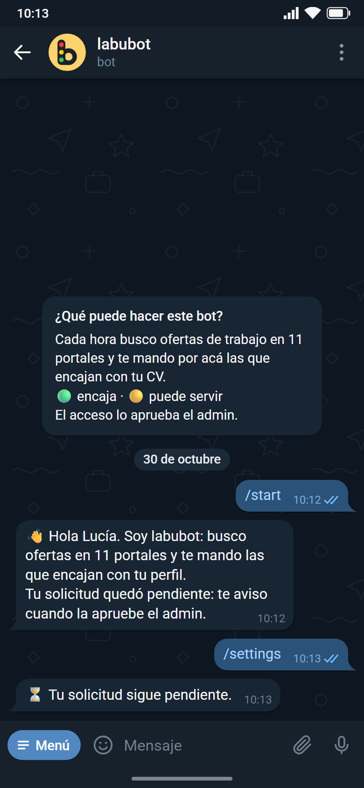
Alta pendiente
Lucía manda /start: queda pending y el bot le explica qué hace. Mientras espera, todo lo demás contesta STILL_PENDING.
maqueta HTML
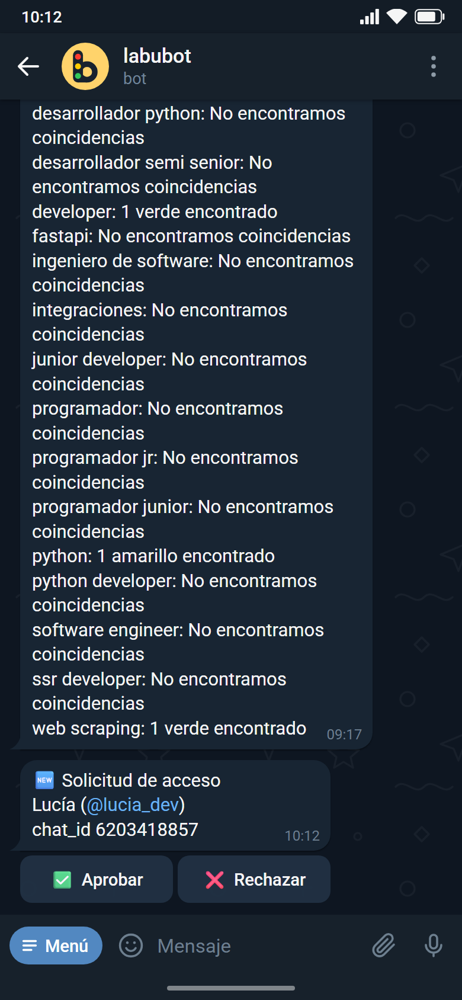
Solicitud al admin
En el chat del admin (ADMIN_CHAT_ID) llega ADMIN_REQUEST con los botones approve:{chat_id} y reject:{chat_id}. Arriba, el final del resumen de su corrida de las 9:00.
maqueta HTML
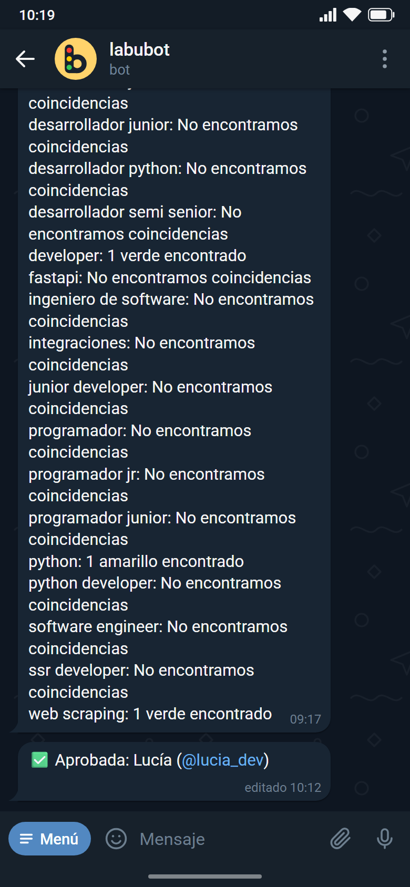
Solicitud aprobada
El admin toca Aprobar: editMessageText reemplaza el mismo mensaje (sin botones) y Lucía pasa a active.
maqueta HTML
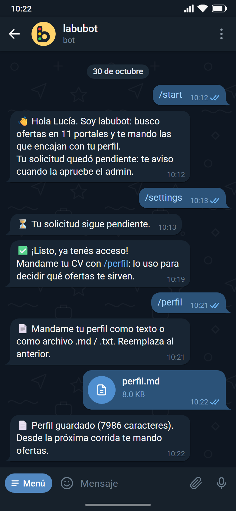
Carga del perfil
Le llega APPROVED; con /perfil el bot pasa a awaiting_profile y Lucía manda su CV como perfil.md (se baja con getFile).
maqueta HTML
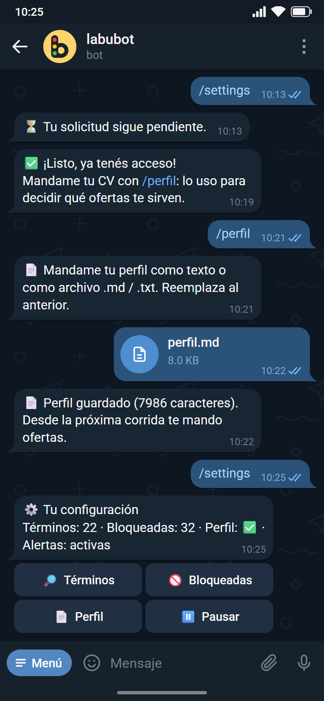
Panel /settings
Un solo mensaje con contadores y cuatro botones; navegar lo edita en lugar de mandar mensajes nuevos.
maqueta HTML
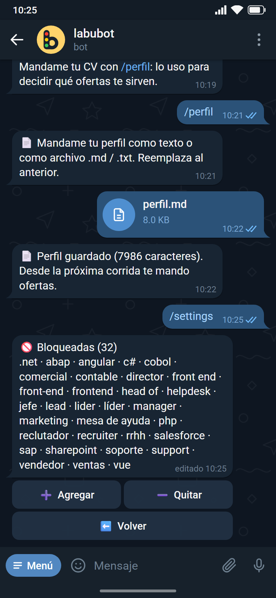
Palabras bloqueadas
Botón 🚫 Bloqueadas (callback blocked): el panel se edita a la lista, con la semilla DEFAULT_

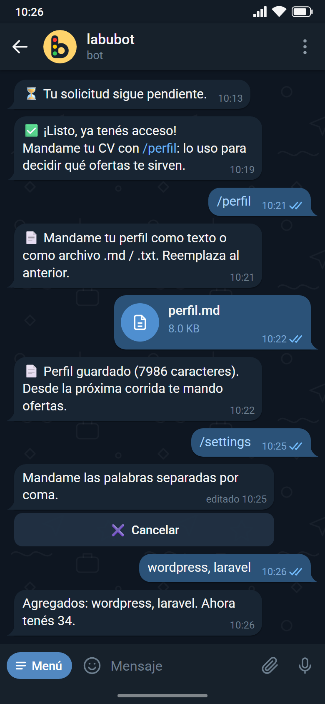
Agregar bloqueadas
➕ Agregar deja awaiting_blocked_add y el panel pide las palabras. Lucía manda «wordpress, laravel»: pasa de 32 a 34 bloqueadas.
maqueta HTML
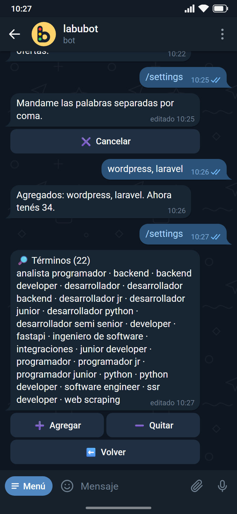
Términos de búsqueda
Botón 🔎 Términos (callback terms): las palabras clave de Lucía, en orden alfabético. La corrida las busca de a una y agrupa cada oferta bajo la primera que la trajo.
maqueta HTML
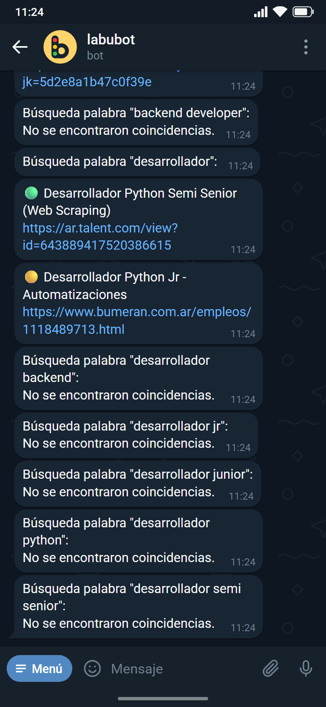
Ofertas por palabra
La corrida de las 11:00 le llega a las 11:24, después de la de Leandro. Sus 22 palabras, en orden alfabético: si trajo 🟢🟡, KEYWORD_HEADER («Búsqueda palabra "…":») y un OFFER por oferta, verdes primero; si no, un solo mensaje con NO_MATCHES («No se encontraron coincidencias.»), sin sonido (disable_notification). Las compuestas casi nunca traen nada: sus ofertas ya las trajo la palabra más corta. Supone link_preview_options desactivado.
maqueta HTML
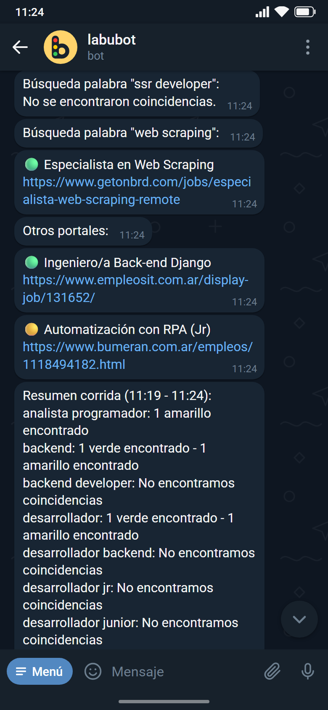
Fin de la corrida
El final de la corrida, con el chat desplazado hacia arriba: el resumen no entra en una pantalla. Las últimas palabras y «Otros portales:», que aparece solo porque trajo algo (portales sin búsqueda y ninguna palabra en el título). Después, siempre y sin sonido, el resumen: de 11:19, cuando arrancó la corrida de Lucía, a 11:24, cuando se manda.
maqueta HTML
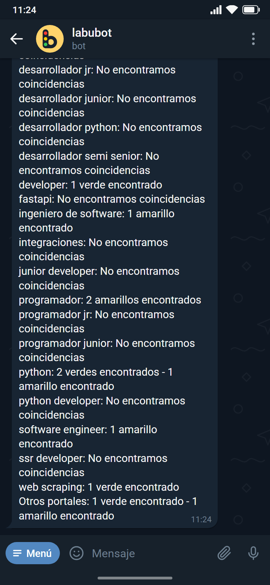
Resumen de la corrida
El resto del resumen. Una línea por palabra, en el mismo orden: las 🟢🟡 que se le mandaron («1 verde encontrado - 1 amarillo encontrado», «2 amarillos encontrados») o «No encontramos coincidencias». «Otros portales» va al final y solo si trajo algo.
maqueta HTML
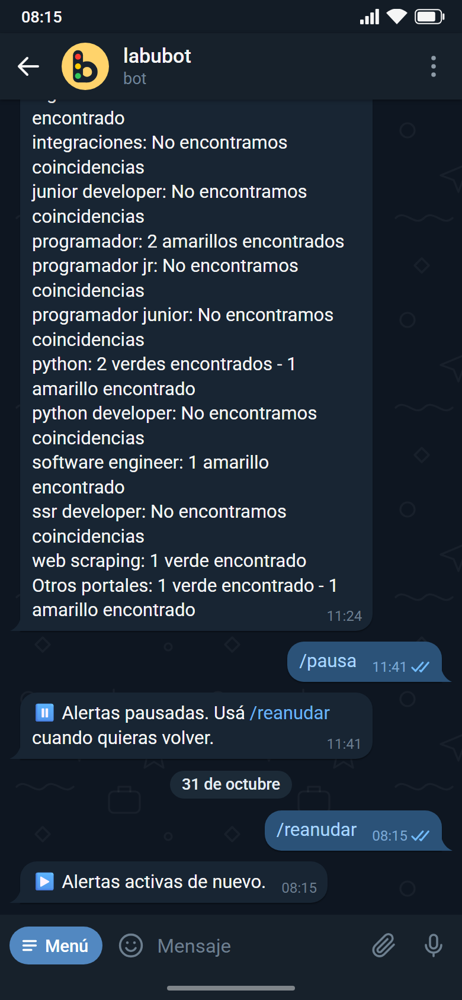
Pausar y reanudar
/pausa deja a Lucía en paused y las corridas la saltean, resumen incluido: no le llega nada; a la mañana siguiente, /reanudar la vuelve a active.
maqueta HTML
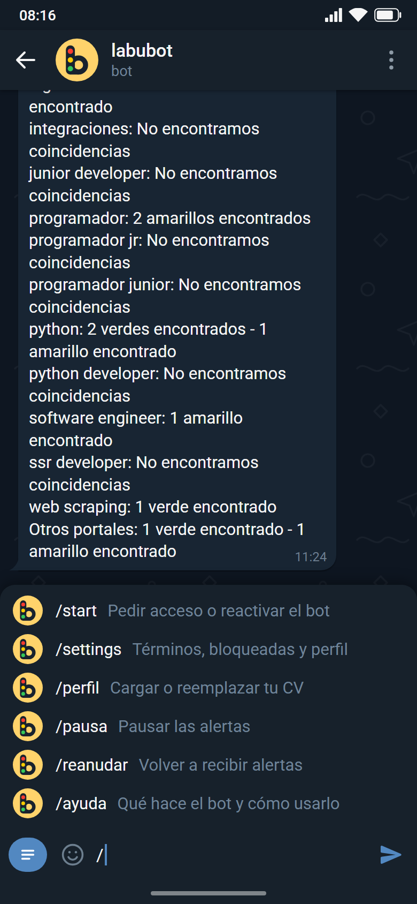
Menú de comandos
Al escribir «/» aparecen los comandos de setMyCommands. /usuarios no figura: solo se registra en el chat del admin.
maqueta HTML
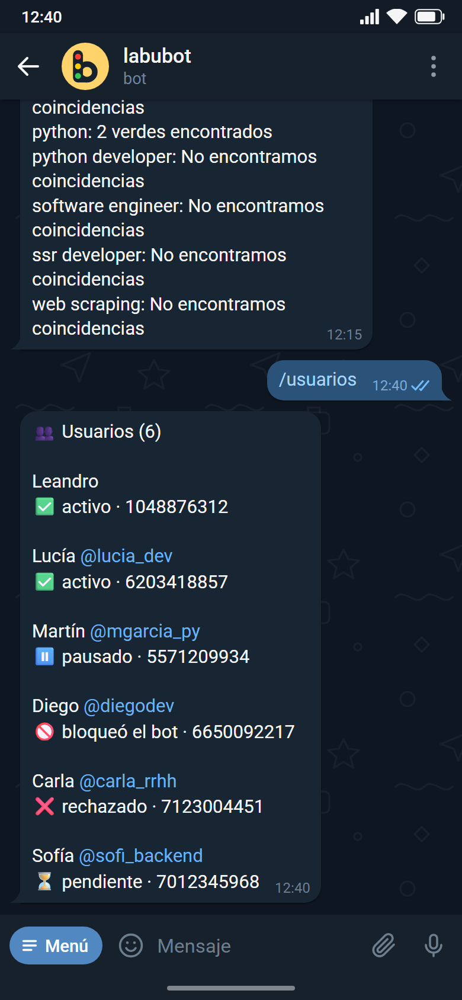
Usuarios (admin)
En el chat del admin, /usuarios lista a todos por orden de alta, pendientes y rechazados incluidos: nombre y @usuario arriba, estado y chat_id abajo. Desde otro chat contesta UNKNOWN.
maqueta HTML